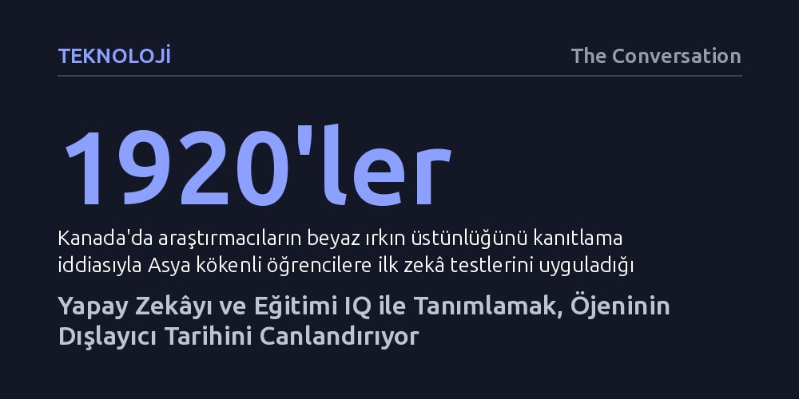

TEKNOLOJI · The Conversation · 2026-10-19
Yapay zekâyı salt IQ ve ölçülebilir zekâ üzerinden tanımlamak, geçmişte ırkçı ve ayrımcı öjenik politikaları meşrulaştıran tehlikeli zihniyeti farkında olmadan yeniden canlandırıyor. Eğitim kurumlarının bu tuzağa düşmemek için standart sınav takıntısını bırakıp eleştirel düşünceye ve insani ilişkilere odaklanması gerekiyor.
Yapay zekânın insandan üstün olduğu iddiasının tarafsız bir bilimsel gerçek değil, geçmişte insanları sınıflandırıp dışlamak için kurgulanmış karanlık bir mirasın devamı olduğunu gösteriyor.

OpenAI tepe yöneticisi Sam Altman'ın yakın gelecekte insan kapasitesini aşacak bir yapay genel zekâdan bahsederken, yeni doğan nesillerin "saf IQ açısından yapay zekâdan asla daha zeki olamayacağını" iddia etmesi teknoloji dünyasında büyük yankı buldu. Ancak zekâyı tek boyutlu bir sayıya, yani IQ puanına indirgeyen bu tekno-iyimser söylem, sanıldığının aksine geleceğe değil, bilimin en karanlık dönemlerine işaret ediyor.
Zekâ kavramı, biyolojik ve tartışmasız bir doğa yasası değil; tarihsel olarak belirli güç odaklarının çıkarları doğrultusunda kurgulanmış tehlikeli bir fikir. Bugün Silikon Vadisi liderleri teknolojinin insandan daha akıllı olduğunu ilan edip bu sistemleri yalnızca kendilerinin denetleyebileceğini savunurken, 20. yüzyılın başında insanları hiyerarşik listelere dizen o tehlikeli mantığı farkında olmadan yeniden üretiyorlar.
Yirminci yüzyılın başlarında modern üniversitelerin ve akademik disiplinlerin kuruluşu, zekâ ve IQ kavramlarına sözdebilimsel kılıflar uydurma çabalarıyla iç içe gelişti. Örneğin 1920'lerde Kanada'da saygın eğitim araştırmacıları, Asya kökenli öğrencilere zekâ testleri uygulayarak beyaz Anglo-Sakson üstünlüğünü ve Asyalıların sözde düşüklüğünü kanıtlama peşine düştüler. Zekâ; genetik olarak aktarılan, sonradan geliştirilemeyen ve ırksal hiyerarşiyi meşrulaştıran kalıtsal bir özellik olarak kodlandı.
Bu öjenik yaklaşımın en yıkıcı sonuçları yerli halklar üzerinde görüldü. 1930'larda Mohawk Enstitüsü gibi yerli yatılı okullarında çocuklara zorla IQ testleri uygulandı ve bu testlerin sözde sonuçları üzerine iki ayrı kitap yazılarak devletin ayrımcı yerli politikaları meşrulaştırıldı. Akademisyenler kendilerini toplumun zekâ ölçüm memurları ilan ederken, zekâ testleri fırsat kapılarını belirli gruplara açıp yerli ve azınlık topluluklarını sistem dışına itmenin en elverişli aracına dönüştü.
Geçmişte öjenik yaklaşımlarla inşa edilen ölçme, puanlama ve standartlaştırma hırsı, zamanla üniversitelerin temel varlık gerekçelerinden biri haline geldi. Kurumlar saygınlıklarını ve verimliliklerini öğrencileri sürekli sınavlara sokarak, harf notlarına bölerek ve sıralayarak kanıtlamaya çalıştılar. Ancak bu aşırı standartlaşma acı bir ironiyi beraberinde getirdi: Eğitimi mekanik çıktılara ve test sonuçlarına indirgemek, yapılan akademik işi yapay zekânın kolayca taklit edebileceği bir otomasyon nesnesine çevirdi.
Bugün yapay zekânın ödev yapmasından korkan akademisyenlerin alelacele el yazılı sınavlara ya da sözlülere dönmesi, sorunu çözmek bir yana engelli bireyleri dışlayan sağlamcı engelleri yeniden diriltiyor. Dahası, yapay zekânın insan becerilerini köreltmesinden yakınırken kullanılan zihinsel zayıflık gibi tabirler, öjenistlerin insanları damgalamak ve kısırlaştırmak için ürettiği tıbbi jargonun farkında olmadan tekrar edilmesinden kaynaklanıyor.
Yapay zekâ çağında eğitimcilerin ve toplumun sorması gereken asıl soru, yapay zekânın kaç IQ puanına ulaştığı değil; zekânın ne olduğu ve kimin yararına tanımlandığıdır. Eğer eğitimi sadece standart görevleri tamamlamak ve not almak üzerinden kurgulamaya devam edersek, algoritmaların insanları soyut ölçütlerle değersizleştirdiği otoriter bir geleceğe zemin hazırlamış oluruz.
Çıkış yolu, yüksek riskli standart sınavlardan ve insanları sıralama takıntısından vazgeçmektir. Üniversiteler; öğrencilerin birbiriyle kurduğu insani bağlara, eleştirel düşünme yetisine, fikirler arasında derin ilişkiler kurma becerisine ve ortaklaşa üretime odaklanmalıdır. Zekâ, sayılarla ölçülen soğuk bir veri değil; kişiler arası, dinamik ve dönüştürücü bir insani deneyim olarak yeniden sahiplenilmelidir.